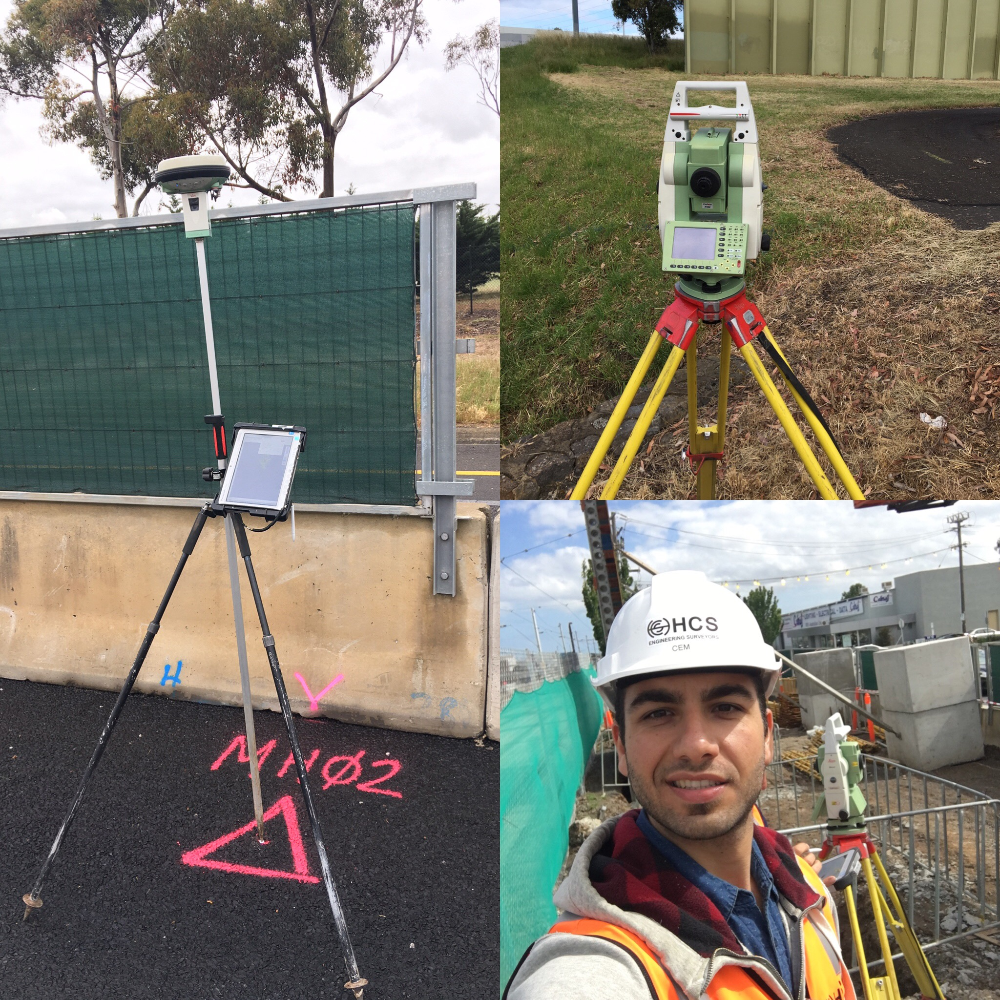

-

Jim Sahin
- Home
- About
- Education
- Experience
- Internships
- Projects
- References
- Contact
I am Jim Sahin
Geomatics Engineer
A professional with a Masters in Geomatics Engineering and over two years work experience in geographic information systems (GIS), geospatial analyses and site surveying.
Skills in cartography, photogrammetry and geodesy. Energetic and highly motivated team player.
International experience managing large, complex regional and local GIS / remote sensing datasets. Additional skills include project management, consulting and procurement,
development of sales proposals, liaison with national government, university and private sector stakeholders, research and development and staff management.


About.
Full Name
Jim Sahin
(Cem Deniz Sahin)
Address
Skills.
General
- Highly people oriented, customer-focused and solutions driven
- Focussed on industry best practice and innovation
- Strong project management and organisational skills, capable of managing different projects at the same time
- Well-developed negotiation, interpersonal and leadership skills
- Experienced in project proposals, tendering procedures, service and work contracts
- Ability to create solutions under stress
- Strong analytical and problem solving skills and resourceful
Computer Programs
- ArcGIS
- GlobalMapper
- QGIS
- ER Mapper
- ENVI
- Erdas
- NetCAD
- 12d Model
- Geomagic
- Lecia Cyclone
- Microsoft Office
Education.
2016
Master of Science in Geomatics Engineering
Istanbul Technical University (ITU)
Istanbul, Turkey
My thesis focused on the use of GIS technologies in mapping water consumption, entitled “Determining Water Consumption with Help of Geographical Information Systems in the Base of Hotels; A case study from Istanbul”. This work demonstrated that, through use of GIS, future hotel water consumption requirements could be more easily analysed to assist in future regional water planning.
2014
Bachelor of Science in Geomatics Engineering
Istanbul Technical University (ITU)
Istanbul, Turkey
My undergraduate thesis investigated a range of modelling methods to analyse the effects of different land features on emergency flooding events, using terrestrial LiDAR technologies.
2012
Erasmus Exchange Program in Rural and Surveying Engineering
Aristotle University of Thessaloniki
Thessaloniki, Greece
The Erasmus Programme is a European funding programme established in 1987 offering university students a possibility of studying or doing an internship abroad in another country.
Experience.
Assistant Engineering Surveyor
Heavy Construction Solutions
Melbourne, Australia
Nov 2016 - Jan 2017
Company
HCS is one of Australia’s most diverse engineering surveying businesses providing Survey Management and UAV solutions for major construction projects throughout Australia and South East Asia. HCS work with the world’s largest engineering construction companies to deliver exceptional value and quality of work.
Responsbilites
- Supported site surveyors to gather survey field data (using total station and GPS )
- Prepared work sheets for engineering surveys and applying all relevant checks to ensure quality of computed work
- Assisted in the training of staff, maintenance of equipment and office records and assisting in the development of new techniques and procedures.
Projects
Project Experience: CityLink Tulla Widening Project
HCS has been awarded the Engineering Surveying Services contract by Lend Lease for the $250 million Tullamarine Freeway upgrade between Melbourne Airport and Bulla Road
Geomatics Engineer, Technical Sales and Customer Support
NIK System
Istanbul, Turkey
Jul 2015 - Jun 2016
Company
NIK System is the largest specialist remote sensing solutions company in Turkey. It has the widest range of satellite imagery products, but also gives technical support to private and government clients who need assistance to analyse imagery. Additionally, NIK is the distributor of the software that can be used for processing satellite imagery
Responsbilites
- Analysed and provided technical report on satellite imagery for over 200 national and international clients such as Fugro Maps and TUBITAK
- Promoted the company’s satellite imagery, software, airborne and hyperspectral cameras and LiDAR systems to private and public clients
- Provided technical support and consultancy on the use of imagery.
- Represented the company at conferences, trade shows, fairs and industry functions
- Developed and maintained sales relationships with potential, existing clients and vendor partners including Airbus, Japan Space System and DigitalGlobe
- Delivered weekly and monthly risk and sales status reports to company directors
Achievements
- Personally managed confidential, commercially sensitive contracts up to AUD$0.25M e.g. confidential defence organisation
- Maintained high levels of customer satisfaction which resulted in renewal of future sales agreements
- Expanded international sales by 30% by negotiating a new deal with a satellite image provider partner in China
- Organised a campaign which assisted the company to exceed target sales of mid-resolution imagery by 20% in 2015
GIS Analyst
National Innovation and Research Centre for Geographical Information Technologies
Istanbul, Turkey
Mar 2014 - May 2015
Company
Istanbul Technical University's National Innovation and Research Center for Geographical Information Technologies was founded in 2013 with the objective to establish a geospatial research and development center to develop and provide location based services (LBS). Its projects cover disciplines related to urban development and planning, evironmental sciences, public welfare and safety, and land use/land cover monitoring and analysis.
Responsibilities
- Provided GIS and desktop (online) mapping support for a range of internal and external consulting projects.
- Worked on flood data management project
- Collated site GIS data (mobile mapping) for the ITU online Campus Map, an interactive map for university users
- Supported development of large national GIS database from the Turkish Statistical Institute (national GIS sources and statistical data e.g. population, transport etc.)
- Managed and participated in fieldwork and data collection of special and geographical information
- Acquisition, integration, maintenance and delivery of spatial data
- Analysed, rendered and presented this information visually in an online map form
- Supported the ITU Campus LiDAR Scanning program implementation
- Organized technical and academic events within the university such as the 27th International Geodetic Student Meeting (2014) held in Istanbul, Turkey
- Represented the centre in national and international meetings and conferences
Achievements
- Edited and wrote 2 chapters for a GIS lecture book under the supervision of the centre’s assistant manager for Afyon Kocatepe University
Internships.
Archaeological Survey of Bogsak Island
Republic of Turkey Ministry of Culture and Tourism and ITU
Silifke / Mersin, Turkey
Aug - Sep 2012

Company
The 2012 campaign of the survey of Bogsak Island and its environs (Mersin province) continued to investigate the extent and characteristics of the architectural development and transformation on the Isaurian coast and islands during the Late Antique period
Responsbilites
- Surveyed the island’s surface and analysed data as part of the project team. Worked within a multidisciplinary team consisting of architects, archaeologists and historians.

Company
Yüksel Proje gives feasibility, design, construction supervision and project management services in the fields of highways, motorways, railways, mass transportation, marine structures and airports. The Kadikoy-Kartal Metro Line has an approximate length of 26,5 km and a total of 19 stations and tendering price was approximately € 751 million
Responsbilites
- Surveyed the tunnels and motorways working with engineers and project workers.


References.
Avaliable on request. Contact me for more information.